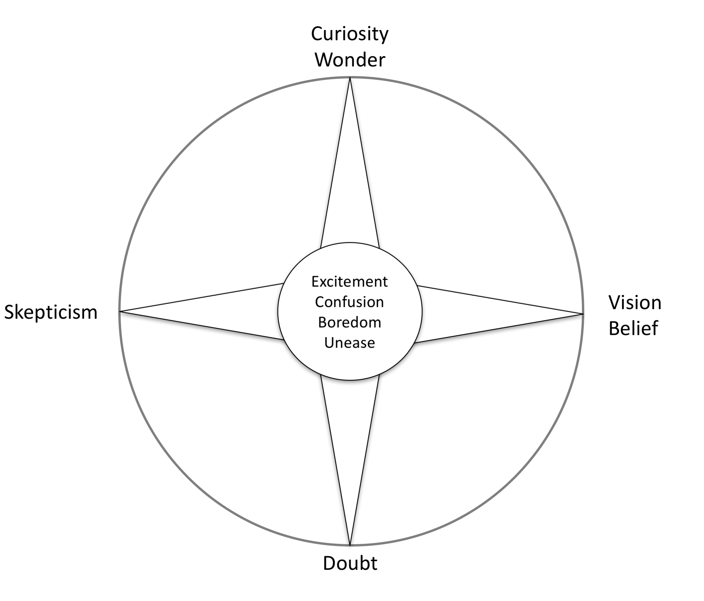

Curisity, Doubt, Vision, Scepticism: Architect's Personal Compass
This article is based on the article The four points of the HCI research compass, interactions 20, 3 (May 2013), 34-37.
Most discussions about architecture focus on architecture methods and skills, on the question of how architecture work should be conducted. Architecture tools and methods, however, are only passive instruments in the hands of motivated architects. But what exactly motivates and drives architects? Here I address this question, arguing that we need to be more thoughtful about our motivation, not just our skills.
Skills can help us to do the architecture work properly, but motivation is the main force behind all of our efforts. To support this discussion, and inspired by recent ideas from James Alexander, I use the metaphor of a compass to discuss architect’s motivation independent of the methods being used. Using this metaphor I view architecture work as being driven by four main motivators (Figure 1):
- Curiosity, where we follow our strong interests and desires to learn new things;
- Doubt, where we want to obtain deeper and more certain understanding;
- Vision, where we set or follow vision and ideals; and
- Skepticism, where we question the possibility of reaching some goals.
These four directions are legitimate motivators for doing architecture work, and that we need to have efforts in all of them. Each of these motivators has positive and negative sides, and awareness of the pros and cons can help us to do better work. The main question is not which of these directions to follow, but rather, what is the right balance among work motivated by all four sides.

Curiosity and Wonder
Curiosity and wonder describe the natural characteristic of architects to have a strong interest in and eagerness to know more about a topic. Many innovative contributions came from people being fascinated by or curious about some issue, including technology, people, or interaction between technology and people.
Learning new technologies, building proofs-of-concept, and experimenting with new tools are all ways architects should use to leverage their curiosity to gain more insights about things useful for their organizations.
While curiosity and wonder are the driving force behind innovations, they alone are not sufficient for a practical contribution. If overemphasized, they may even produce negative effects. For instance, they may prevent us from obtaining more depth in our work as we are jumping from topic to topic.
Doubt
When we or others make some innovative work we may ask ourselves if our results are wrong, coincidental, or a result of wishful thinking. Such questions are the beginning of doubt, one of the most important motivators behind architecture work. Any analysis or evaluation can be viewed as an effort to reduce doubts about our findings.
Architects can constructively doubt new ideas and proposals by evaluating solutions and doing economic and risk modeling. In such ways, they can discover weaknesses or put proposals on more solid grounds.
As a motivator, doubt is primarily a positive force. Contrary to skepticism, doubt does not question the possibility of knowing something or the validity of pursuing some direction. When we doubt some finding, we want to set it on firmer ground and add more certainty to it.
Too much doubt also has its disadvantages; for example, it can lead to situations in which we work only on minor improvements that can be easily tested, but do not produce enough innovation.
Vision and Belief
While the term belief may have a negative connotation in the professional world because of its vague definition and association with religion, it is difficult to imagine any activity without some form of belief or guiding vision.
Defining a technology strategy or ways of working are typical activities where people expect an architect’s vision. Vision is a very important component of any organizational effort, as shared vision can inspire people and enable synergic developments.

Too much reliance on the vision, on the other hand, may have some negative consequences. If we get too excited about the vision we are following, we may become less critical about our ideas. This can lead to confirmation bias, a tendency to favor information that confirms our beliefs or hypotheses. Vision can guide us in the wrong direction. We may also end up with visions that are too narrow. This may lead to overspecialization and to situations in which we are blind to innovative solutions because they are beyond the scope of any of the currently active visions. In addition, to be useful, vision should be based on deep knowledge and understanding of the field, not on its ignorance.
Vision and belief are much more complex motivators than curiosity and wonder. When we are driven by curiosity, we simply follow interests and the desire to learn something new. Vision and belief, on the other hand, require longer-term commitment to some idea, as well as constant effort to focus and organize our activities.
Skepticism
Skepticism is a loaded term with a number of definitions. Closest to the meaning I use here is the definition of skepticism as “doubt regarding claims that are taken for granted elsewhere.” I view skepticism in a similar fashion, as a reality checker that questions the fundamental premises we normally take as a given. As such, skepticism can call attention to the viability, feasibility, or practicality of a direction or approach. Contrary to doubt, which can motivate us to further investigate some topic to obtain more certainty, skepticism may call us to abandon some line of inquiry and consider alternatives.
Being critical of new hype, dismantling the buzzwords, presenting the problem in clear terms, understandable to a broader audience, and identifying the real drivers behind buzzwords based on internal and external research is a typical set of skeptical activities architects should do.
Fred Brooks’s paper “No Silver Bullet—Essence and Accidents of Software Engineering” is probably one of the best examples of useful skeptical thought in software engineering. Brooks expressed his skepticism toward approaches to software engineering that aim to discover a single solution that can improve software productivity by an order of magnitude. Brooks seriously questioned the possibility of ever finding such “startling breakthroughs,” arguing that such solutions may be inconsistent with the nature of software. Brooks also made clear that his skepticism is not pessimism. While Brooks questioned the possibility of finding a single startling breakthrough that will improve software productivity by an order of magnitude, he believed that such improvement can be achieved through disciplined, consistent effort to develop, propagate, and exploit a number of smaller, more modest innovations.
Skepticism can be a useful antidote to too much excitement or opportunism. Skeptical contributions, if well argued, can prevent the wasting of energy and resources in pursuing wrong directions and stimulate us to rethink our approach. The same applies on the individual level. Having curious and enthusiastic students guided by experienced and more skeptical mentors is a proven and very successful model for education.
Too much skepticism, on the other hand, comes with negative side effects. Chris Welty nicely described this problem as what he called “unimpressed scientist syndrome.” In his keynote speech at the 2007 International Semantic Web Conference, Welty portrayed his personal history of strong skepticism toward many computing innovations that later become very successful, including email, the World Wide Web, and the Semantic Web. He argued that this may be a wider problem, and that many people are skeptical by rule rather than by thought, rejecting innovative solutions without serious consideration with phrases such as “I’ve seen this before; this is not gonna work.” Furthermore, if skepticism is not a well-argued result of long experience, it may trigger an emotional debate without contributing much to it. Similar to vision, useful skepticism requires deep knowledge and a fundamental understanding of the field. It is not surprising that many skeptical authors are also authors of influential visionary contributions.
Skepticism is probably one of the most complex motivators. Contrary to doubt, which can rely on a number of tools and methods (e.g., analyses, experiments), there are no simple and structured tools for skepticism. Useful skepticism requires careful thought, experience, and an excellent overview of the field.
Using the Compass
The four points of our arhitecture compass metaphor do not suggest that architect’s contributions should be motivated by only one direction. Even individual archtect usually combine several elements, presenting our discoveries (curiosity), for instance, with their evaluations (doubt). In a team it is good to have individuals with different affinities. At a organization level, it is equally important to have contributions motivated by all four points. The organization cannot develop without new ideas and new visions, but without a healthy dose of doubt and skepticism, we can get incorrect results or go in a faulty direction. It is also the responsibility of the organization to set high standards and maintain the right balance among contributions originating from different motivations.
The architecture-compass metaphor can help architects to be more thoughtful about their professional development and stimulate them to ask themselves questions such as:
- Do we have vision about where we would like to go, or are we simply following the latest trends?
- Do we doubt our findings enough and are we using the right methods?
- Are we curious enough about topics of our work? Do we explore enough or do we jump too quickly to evaluations and tests? Do we have a plan to maintain our curiosity, such as a personal education?
- Are we skeptical enough about our own work? Are we too skeptical about other’s works? Are we more skeptical toward some domains and less toward others?
Answering these questions can make us more thoughtful about our motivation and enable us to make more informed decisions about our development as architects.
Guiding Principles ← Economic Modeling |
Guiding Principles Culture Map: Architects' Culture Mindfield Compass → |